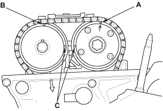
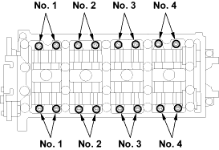
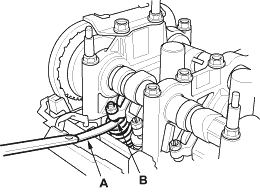

NOTE: Adjust the valves only when the cylinder head temperature is less than 38°C (100°F).
- Remove the cylinder head cover (see page 6-24).
- Set the No. 1 piston at TDC. The punch mark (A) marked with an arrow on the Variable Valve Timing Control (VTC) actuator and the punch mark (B) on the exhaust camshaft sprocket should be at the top. Align the TDC marks (C) on the VTC actuator and exhaust camshaft sprocket.


- Select the correct thickness feeler gauge for the valves you're going to check.
Intake:
0.21 - 0.25 mm (0.008 - 0.010 in.)
Exhaust:
0.25 - 0.29 mm (0.010 - 0.011 in.)
Adjusting screw locations:
EXHAUST

INTAKE
- Insert the feeler gauge (A) between the adjusting screw (B) and the end of the valve stem and slide it back and forth; you should feel a slight amount of drag.
